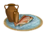
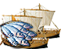
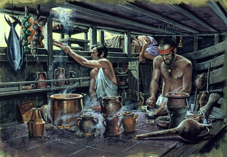
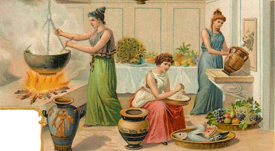

RTR: Imperium Surrectum
RTR: Imperium SurrectumFish Salting Industry
3 levels, each replacing the one before it — you upgrade in place rather than building alongside.
Fish Salter (Urban) → Salted Fish Market (Urban) → Garum Factory (Urban)
Levels at a glance
| Level | Cost | Build time | Minimum settlement | Upgrades to | Level | Cost | Build time | Minimum settlement | Upgrades to | ||
|---|---|---|---|---|---|---|---|---|---|---|---|
| Fish Salter (Urban) | 1,800 | 2 | large town | Salted Fish Market (Urban) |  | Salted Fish Market (Urban) | 4,200 | 4 | city | Garum Factory (Urban) | |
 | Garum Factory (Urban) | 8,400 | 6 | large city | — |
Costs in denarii, build time in turns.
Fish Salter (Urban)

A preserver and enhancer of the daily catch.
Many kinds of fish benefit from salting and maturing to bring out the true flavour. By packing fresh fish in coarse salt and drying them on wooden racks, local fishermen can preserve their catch for months rather than days. In some places drying or smoking is also popular but these methods are also improved immensely with the addition of salt.
Preserved, these fish can now travel far and wide, feeding nobles, cities, and kings, even those who’ve never seen the sea. Thanks to the wonders of salt, what starts as a catch at dawn becomes the lasting sustenance of distant lands.
Wording varies by culture: 2 versions of this description exist in the game files.
| Cost | 1,800 denarii | Build time | 2 turns | Minimum settlement | large town | Upgrades to | Salted Fish Market (Urban) |
Requirements — all of these must hold before this level can be built.
- the region does not have the hidden resource
nobuild(nobuilding) - the region has the fish resource
- Local Market at Local Barter or above is built here
- no building tagged
urban_exploitsis built or queued here (no_other_urban_exploits) - Government Building
Show the condition as the game files write it
nobuilding and resource fish and building_present_min_level market trader and no_other_urban_exploits and requires_gov
What it does
- +1 population health
Show 2 effects that apply only in the circumstances shown
- +1 trade income — only when
salt_building_supply - Trade bonus 10% due to resource: salt — only when
salt_building_supply
Salted Fish Market (Urban)

A market of salted fish, feeding both locals and distant lands.
Salted fish is a treasure as valuable as the golden sun itself, well, at least to the hungry.
A salted fish market gathers these small workshops under one roof, giving merchants a steady supply and ensuring fair weights and measures.
What would otherwise be an expensive meal becomes affordable and a great stream of coin flows to the fishmongers who keep the empire well-fed, one salty fish at a time.
Wording varies by culture: 2 versions of this description exist in the game files.
| Cost | 4,200 denarii | Build time | 4 turns | Minimum settlement | city | Upgrades to | Garum Factory (Urban) |
Requirements — all of these must hold before this level can be built.
- the region does not have the hidden resource
nobuild(nobuilding) - the region has the fish resource
- Local Market at Local Market or above is built here
- Government Building
Show the condition as the game files write it
nobuilding and resource fish and building_present_min_level market market and requires_gov
What it does
- +2 population health
Show 3 effects that apply only in the circumstances shown
- +1 trade income — only when
not salt_building_supply - +2 trade income — only when
salt_building_supply - Trade bonus 10% due to resource: salt — only when
salt_building_supply
Garum Factory (Urban)

A major production hub for garum, exporting amphorae of “liquid gold” across the region.
Garum is the finishing touch on any good meal, and it is produced right here in the great vats of this factory.
The scale of this facility speaks to the demand for garum, as merchants transport amphorae upon amphora of the precious sauc to distant lands, destined to delight taste buds from Alexandria to Rome.
This factory is the pride of the local industry, drawing labourers, artisans, and traders to the area, for where there is garum, there is profit and prestige.
The demand for garum enriches both the factory's owners and the local economy, making it a centre of commerce and cultural influence, but also creates a rather… distinct fragrance that wafts across the coast.
Wording varies by culture: 2 versions of this description exist in the game files.
| Cost | 8,400 denarii | Build time | 6 turns | Minimum settlement | large city |
Requirements — all of these must hold before this level can be built.
- your faction is one of
roman, greek, carthaginian, pontus, anatolian, iberian, libyans, e_hellenistic, w_hellenistic - the region does not have the hidden resource
nobuild(nobuilding) - the region has the fish resource
- the region has the salt resource — or — anywhere in your empire has the hidden resource
salt_supply_built(salt_building_supply) - Local Market at Forum or above is built here
- Government Building
- Trade Port is built here
Show the condition as the game files write it
factions { roman, greek, carthaginian, pontus, anatolian, iberian, libyans, e_hellenistic, w_hellenistic, } and nobuilding and resource fish and salt_building_supply and building_present_min_level market forum and requires_gov and building_present port_buildings
What it does
- +4 trade income
- +2 population health
- -1 public order (happiness) (player only)
Show 1 effect that apply only in the circumstances shown
- -1 public order (happiness) — only when
not is_player and building_present_min_level slave_market slave_market
What the shorthands in those conditions stand for (4)
| Shorthand | Stands for | Shorthand | Stands for | Shorthand | Stands for | Shorthand | Stands for |
|---|---|---|---|---|---|---|---|
no_other_urban_exploits | no_building_tagged urban_exploits queued | nobuilding | not hidden_resource nobuild | requires_gov | building_present governmentA or building_present governmentB or building_present governmentC or building_present governmentD or not is_player | salt_building_supply | resource salt or hidden_resource salt_supply_built factionwide |